更新日 : 2021/07/03
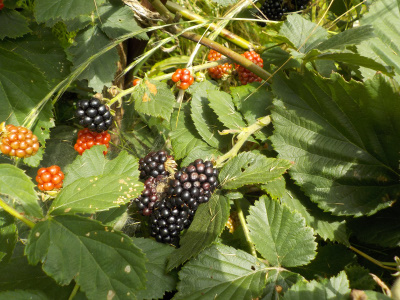
出来たものからドンドン収獲しないと、ドンドン腐っちゃいます。
美味しいんだから面倒なんて言わないで収穫します。
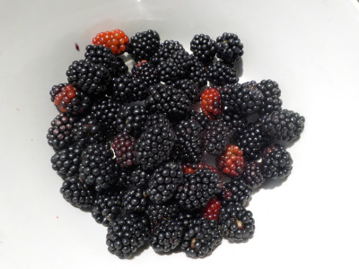
本日の収獲です。タッパー1個分のジャムが出来そうです。
更新日 : 2022/07/05
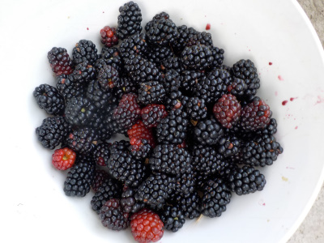
今日はこれだけ収獲出来ました。持って帰って、洗ってジャムにしました。
仕事帰りにやると疲れますね。
更新日 : 2022/07/10
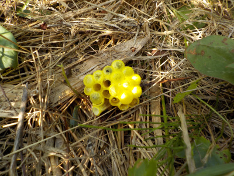
ブラックベリーに蜂の巣があるのを気付かずに収獲していたら、蜂に手を噛まれました。
手袋をしていたおかげか、刺されなくて良かったです。
危険なので殺虫剤を使って取り外しました。
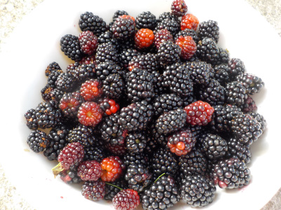
本日の収獲です。ジャムが沢山出来るので、食パンとヨーグルトを常備することにしました。
更新日 : 2022/07/13
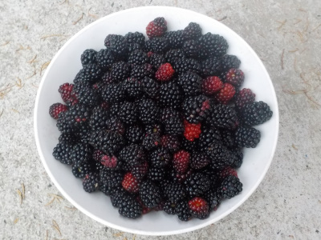
前回収獲してから3日しか経っていませんが、沢山熟れていたので収獲しました。
冷凍庫にジャムが溜まっていきます。
更新日 : 2022/07/17
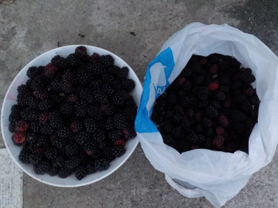
ボール1杯で収まらない量の収獲でした。過去最高の量です。
家にある大鍋でグツグツ煮詰めてジャムを作りました。
冷凍庫に空きがないので、他の冷凍食品をドンドン食べて隙間を作ろうと思っています。
2022/07/24
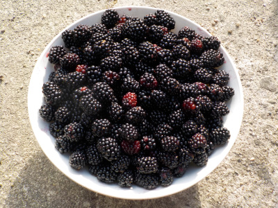
もう冷凍庫には沢山ストックしたので、これから収獲したものはドンドン食べるつもりです。
しっかり煮詰めて、砂糖少なめのジャムを作ります。
量を多く食べるので、普通にジャムを作ったら糖分の摂取過剰になります。
更新日 : 2022/07/24
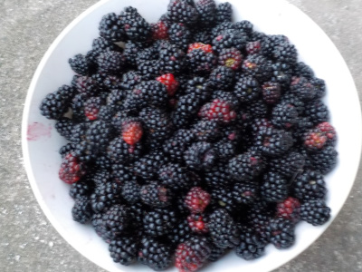
本日の収穫です。また実は沢山あるんですが、猛暑になったので実が水分不足で固くなってきました。
天気予報ではしばらく高温が続くようなので、収獲が減ると思います。
更新日 : 2023/07/16
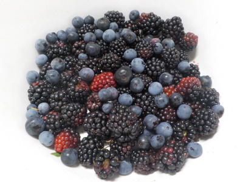
今日の収獲は量が少なかったので、一緒にブルーベリーも収獲しました。
2種類混ざっていると、なんとなく美味しそうに見えました。
更新日 : 2024/07/15
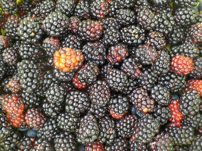
大量に収穫出来たのでジャム作りをします。毎年何度も作っているのでジャム作りが慣れました。
同じことをし続けるのはどうかなー。違うことを考えた方がいいんだろうな。
2025/07/05
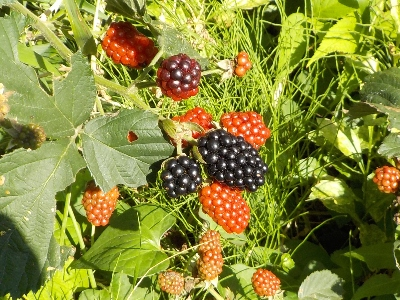
出来上がったジャムを食べるのは好きなんですが、コトコト煮込んでジャムを作るのが面倒なんですよね。タネを取り除く作業もあるし。
生で食べればいいんでしょうけど、生だと固いタネが気になって嫌なんですよね。
植えてあるブラックベリーの量を減らそうかな。
2026/07/24
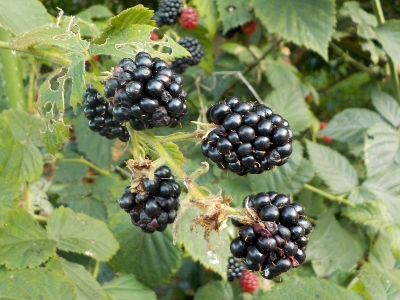
あれもこれもと出来なくなったので、手間がかかるし無くても困らないブラックベリーの収穫を今年はしないことにしました。
来年は余裕があるといいけど、たぶん無理なんだろうな。
沢山食べるのはいいけど、砂糖も沢山食べることになるんだな。
【おいしいものを食べよう。】【たくさん寝よう。】
【ソロ活をしよう!】【季節感のあることをしよう。】【動画視聴はほどほどに。】【当サイトの全てのコンテンツは無断転載禁止です。】